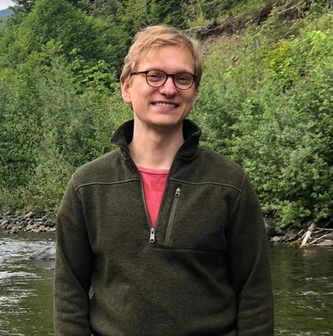

Tuomas Tajakka
Postdoctoral researcher
Department of Mathematics
Stockholm University

Research
My research focuses on algebraic geometry. In particular, I'm interested in moduli spaces of sheaves and complexes on varieties, as well as moduli of twisted sheaves and principal bundles.
My postdoctoral mentor is Sofia Tirabassi. I did my PhD at the University of Washington, where my advisor was Jarod Alper. My current collaborators include Stefan Reppen and Mihai Pavel.
-
Projectivity and effective global generation of determinantal line bundles on quiver moduli
Joint with P. Belmans, C. Damiolini, H. Franzen, V. Hoskins, S. Makarova. We use stack-theoretic techniques to give a modern, GIT-free proof of the classical result that the moduli space of semistable representations of an acyclic quiver is a projective variety. - Uhlenbeck Compactification as a Bridgeland Moduli Space
In this paper I prove that certain Bridgeland moduli spaces on surfaces are projective, and compare these moduli spaces to the Uhlenbeck compactification. - Projectivity of the moduli space of vector bundles on a curve
Contribution to the Stacks Project Expository Collection (SPEC), with J. Alper, P. Belmans, D. Bragg, and J. Liang. - Projective moduli spaces of complexes of sheaves
My PhD thesis.
Teaching
Current
- I'm teaching Mathematics of Cryptography in the spring semester 2023 at Stockholm University.
Past
- Mathematics of Cryptography, Spring 2022, SU
- Math 308 B: Linear Algebra with Applications, Summer 2020, UW
- Math 308 I: Linear Algebra with Applications, Spring 2020, UW
- Math 309 C: Linear Analysis, Summer 2019, UW
- Math 309 A: Linear Analysis, Summer 2017, UW
Notes
- Lecture notes I wrote for Math 309. Topics cover systems of ordinary differential equations, Fourier series, and an introduction to partial differential equations.
Service and outreach
Here are some ways I've engaged with the broader community:
- I was the graduate student mentor for the WXML project Orbit Structures of Crystal Operators led by Jake Levinson in Winter and Spring 2018.
- I mentored a WDRP reading project on Galois theory in Spring 2019.
- I volunteered as a FEPPS study hall tutor at Washington Corrections Center for Women in Winter 2019.
- I was a UAW 4121 steward for the UW math department together with Olivia Borghi and Amzi Jeffs.